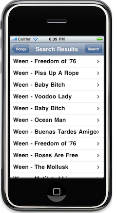

Offline Web Apps on the iPhone
In the midst of my graduate studies, I somehow found the time to write a simple prototype for a mobile Guitar Unleashed client. It's more of a proof-of-concept for some cool new technologies that I've been meaning to play with. Two things led me down this path:
- Since I'm no longer bound by corporate affiliation, I feel compelled to finally develop an interesting application for iPhone.
- I'm very bad at remembering guitar chords and lyrics, but never bother making a cheat sheet to take to the campfire. I nearly always have my phone in my pocket, though.
The GU mobile prototype is very simple. Users can manage a list of favorite songs, and view their lyrics with chords. At first, I set out to create a native iPhone application to do this, but several considerations made me change my mind:
- I don't want to deal with a potential App Store rejection, keeping in mind the dubious legality of lyrics
- The simplicity and data-centric nature of the app lends itself well to a web implementation.

There are a few interesting technical challenges to overcome in implementing
this application. Firstly, the app needs to blend visually with the iPhone look
and feel. I chose the iUI web framework to develop my application. In
retrospect, jQTouch would have probably been a better choice, since I ended
up using jQuery. In addition, iUI is very much not bug free, and I don't like
iUI's anchor-based navigation. Apple provides several iPhone-specific meta tags
to enhance the web experience. For example, <link rel="apple-touch-icon"
href="logo-touch-icon.png" /> allows to specify the icon that will appear in
the iPhone springboard. Setting <meta name="apple-touch-fullscreen"
content="YES" /> will remove the lower hud of MobileSafari. The full list of
options is available from Apple.
The second broad challenge for mine and iPhone web applications in general is
that they need to remain functional without an internet connection. For my
mobile client, data would be provided by two calls returning JSON:
/song/search?query=myQuery returning a list of songs and /song/get/myID
returning specific song info. My first instinct was to implement local
persistence via cookies, as is customary in web development. There's a 4K limit
on the size of each cookie, so storing all songs in one cookie was out of the
question. A simple alternative was to store a cookie with an array of song IDs,
and a cookie for each song. This strategy worked quite well on WebKit and in
the iPhone simulator. Unfortunately, cookie persistence works differently on
the actual iPhone, likely for security reasons. Every time the phone reboots,
MobileSafari's cookie jar is emptied.
The alternative to this is a much more modern approach: HTML5 databases. WebKit now allows you to store structured data locally in an SQLite database. I found this approach to work very well on iPhone. The database backend persists through reboots, as expected. I implemented both storage schemes in separate files, available for your scrutiny: the class SongJar for cookies in jar.js and SongDatabase for HTML5 storage database.js.
The last piece of the puzzle is how to force the web application's source files to get cached on the iPhone, so that the app remains accessible even when the phone is offline. This is done with a cache manifest, also new in HTML5. I ran into several problems trying to set this up, and would have benefited from these tips:
- Reference the manifest from the HTML with
<html manifest="cache-manifest"> - Serve the manifest with the
text/cache-manifestmime type - Ensure that all paths in the manifest are accessible
Though my app is a mere prototype, I'm quite happy with the result. After adding the application to the springboard, it almost feels like a first class iPhone application. You can try it out at http://www.guitarunleashed.com/m/, and please bear in mind that it's a proof of concept.